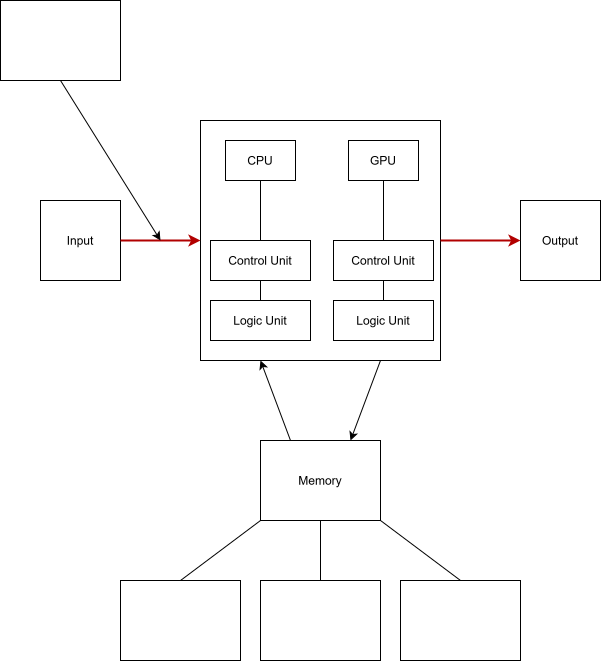

Dieses Arbeitsheft ist zum Thema des Computers und soll euch seine einzelnen Komponenten näher bringen. Ihr startet auf dieser Seite (Von Neumann Architektur)
und bereitet die Mindmap vor, welche euch durch das gesamte Arbeitsheft begleitet. Falls ihr keine Mindmap im A3-Format vor euch findet, geht zum Lehrertische
und holt euch eine von mir ab. Eure Aufgabe ist es, die einzelnen Aufgaben jedes Kapitels zu bewältigen und eure Mindmap Stück für Stück zu erweitern. Auf
dem Weg gibt es auch praktische Aufgaben, bei denen ihr an einem echten Computer Komponenten wie Grafikkarte, CPU, RAM und so weiter aus- und wieder eingebaut.
Dies soll euch helfen, die praktische Seite hinter den sonst eher abstrakten technischen Begriffen zu sehen. Am Ende sollte eine große Mindmap entstehen,
mit der ihr arbeiten und lernen könnt. Nachdem ihr dieses Kapitel bewältigt habt, könnt ihr euch eins der anderen vier (CPU, GPU, Speicher und Mainboard und
Anschlüsse) aussuchen. Welches ihr wählt, ist euch überlassen. Viel Erfolg :)
Aufgabe 1:
Im Folgenden werden drei verschiedene Szenarien beschrieben. Verwendet eurer Vorwissen, um das Problem zu beschreiben und was eine potentielle Lösung sein könnte.
Da offen gestellte Probleme verschiedene Ursachen haben können, kann es auch mehrere Lösungen geben. (Einzelarbeit)
a) Im Browser sind viele Tabs offen und der Computer wird langsamer.
b) Ihr könnte eure Bilder nicht vom Handy auf euren Computer übertragen.
c) Der Computer wird sehr warm und die Lüfter laut.
Falls euch keine Lösung einfällt, könnt ihr auch ausprobieren, was passiert, wenn ihr zum Beispiel mehrere Tabs im Browser öffnet und ein Video abspielt.
Dazu könnt ihr die Auslastung des Computers (CPU, Arbeitsspeicher…) im Task-Manager beobachten.
Aufgabe 2:
Vor euch findet ihr eine Mind-Map zum Thema der Von Neumann Architektur.
Schaut euch die folgenden Informationen an und füllt die frei stehenden Boxen aus. Die drei untersten Boxen können freigelassen
werden. Diese werden ersichtlich wenn das Thema des Speichers bearbeitet wurde.
Das Funktionsprinzip eines Computers wurde vom ungarischen Mathematiker John von Neumann entwickelt. Zwar hat sich die praktische
Ausprägung im Laufe der Zeit und der technischen Weiterentwicklung immer mal wieder verändert. Aber die grundsätzliche Architektur
ist die gleiche geblieben.
Die Architektur des Von-Neumann-Rechners besteht aus vier Funktionseinheiten:
Rechenwerk (Logical Unit)
Steuerwerk (Control Unit)
Speicherwerk (Memory)
Ein-/Ausgabewerk (Input/Output)
Im Von-Neumann-Rechner werden die wichtigsten Einheiten Rechenwerk und Steuerwerk in der eigentlichen Verarbeitungseinheit,
dem Prozessor (Central Prozessing Unit - CPU), vereint. Die CPU übernimmt die Ausführung der Befehle und die Ablaufsteuerung.
Die Befehle werden nacheinander, Schritt für Schritt, ausgeführt. Die Befehle und Daten werden vom Steuerwerk aus dem Speicher
geholt. Da Grafikkarten (Graphic Processing Unit - GPU) in den 1950er Jahren noch nicht essentiell für Alltags-Computer mit
grafischen Ansprüchen waren, wurden diese nicht speziell in der Von-Neumann-Architektur berücksichtigt. Sie würden in der
Von-Neumann-Weltsicht heutzutage als weiteres Rechenwerk neben der CPU angesehen werden. Die GPU besitzt auch ein Rechen- und
Steuerwerk genau wie die CPU. Die Verbindung zwischen den Prozessoren (CPU und GPU), Speicherwerk und Ein-/Ausgabewerk bezeichnet
man als Bus-System, der im eigentlichen Von-Neumann-Rechner unerwähnt bleibt, aber in der Praxis eine wichtige Rolle spielt.
Im Von-Neumann-Rechner werden alle Instruktionen und Daten über das Bus-System geführt. Hier kann es schnell zu Engpässen kommen,
wenn Daten aus dem Speicher geladen werden und gleichzeitig neue Instruktionen ausgeführt werden müssen, um das Rechenwerk
optimal auszulasten. Man spricht deshalb auch vom "Von-Neumannschen-Flaschenhals". Obwohl der Von-Neumann-Rechner ein sehr
einfaches Modell eines Computers ist, basieren alle modernen Computer auf diesem einfachen Prinzip.
Aufgabe 3:
Vergleicht eure Mindmap mit der bereitgestellten Lösung und überprüft, ob eure Antworten mit dem Muster übereinstimmen.

Wenn ihr mit dem Kapitel fertig seid, besucht eines der anderen (
CPU,
GPU,
Speicher und
Mainboard & Anschlüsse
), bis ihr am Ende beim Kapitel Abschluss landet.